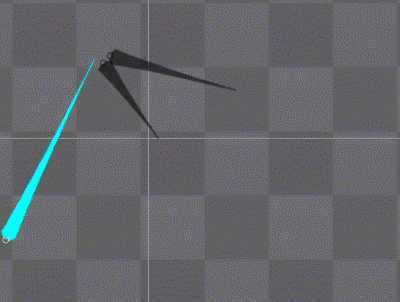
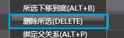

动作编辑器常用操作
创建骨骼
动画示例

所需模式
- 形体模式
- 创建骨骼
步骤
1：在渲染区点击鼠标左键开始绘制骨骼。
2：松开鼠标完成绘制。如绘制过短将会显示一个锚点。
修改骨骼
动画示例

所需模式
- 形体模式
- 停止创建骨骼
操作
调整骨骼的方向
点击快捷工具中的旋转按钮 ，拖拽需要调整的骨骼即可调整骨骼的方向
。
，拖拽需要调整的骨骼即可调整骨骼的方向
。
，拖拽需要调整的骨骼即可调整骨骼的方向
。调整轴心位置
点击快捷工具中的平移按钮 ，拖拽需要调整的骨骼即可调整骨骼的位置。
，拖拽需要调整的骨骼即可调整骨骼的位置。
，拖拽需要调整的骨骼即可调整骨骼的位置。调整骨骼的长度
点击快捷工具中的放大按钮 ，拖拽需要调整的骨骼即可调整骨骼的长度。
，拖拽需要调整的骨骼即可调整骨骼的长度。
，拖拽需要调整的骨骼即可调整骨骼的长度。添加贴图
动画示例

所需模式
- 形体模式
- 停止创建骨骼
步骤
方法A:1：选中骨骼，直接从资源面板中拖拽图片至属性面板的渲染资源属性框中。
方法B:1：从资源面板中拖拽贴图至渲染面板中。
注意：方法A会直接绑定好骨骼，不可更改
绑定到骨头
动画示例

所需模式
- 形体模式
- 停止创建骨骼
步骤
1：在渲染面板中选中贴图，选择右键菜单"绑定到骨头ALT+F"。
2：在渲染面板中选择需要绑定到的骨骼。
3：软件提示"图片将被绑定到骨头上，是否继续"，选择"是"。
绑定父关系
动画示例

所需模式
- 形体模式
- 停止创建骨骼
步骤
1：在渲染面板中选中将要作为子级的骨骼。
2：选择右键菜单"绑定父关系（ALT+P）"。
3：选择将要作为父级的骨骼。
注意：同一个骨骼只有一个父级骨骼，但可以有多个子级。
删除所选
动画示例

所需模式
- 形体模式
- 停止创建骨骼
步骤
1：在渲染面板中选择即将删除的骨骼。
2：选择右键菜单"删除所选（DELETE）"即可将对象删除。
注意：删除时会连带删除所有子级，若只想删除当前骨骼，需要解除父关系。
解除父关系
动画示例

所需模式
- 形体模式
- 停止创建骨骼
步骤
1：在渲染面板中选择即将删除的骨骼。
2：选择右键菜单"解除父关系（ALT+D）"即可解除骨骼绑定关系。
Copyright © 2013 CocoStudio.org. All Rights Reserved. 版本v1.0.0